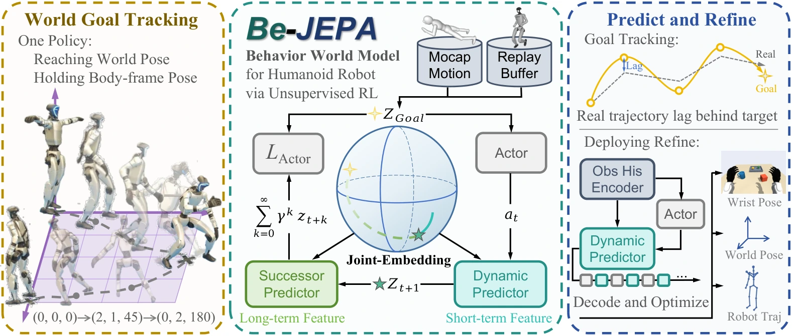
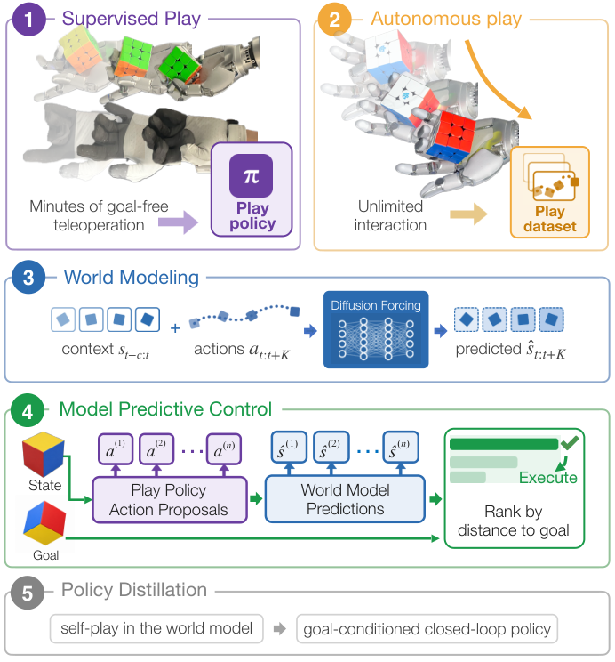
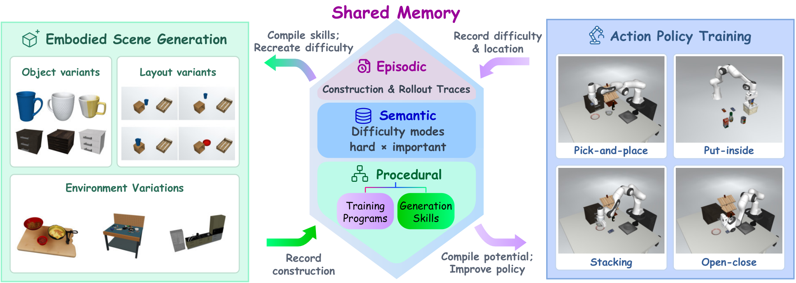
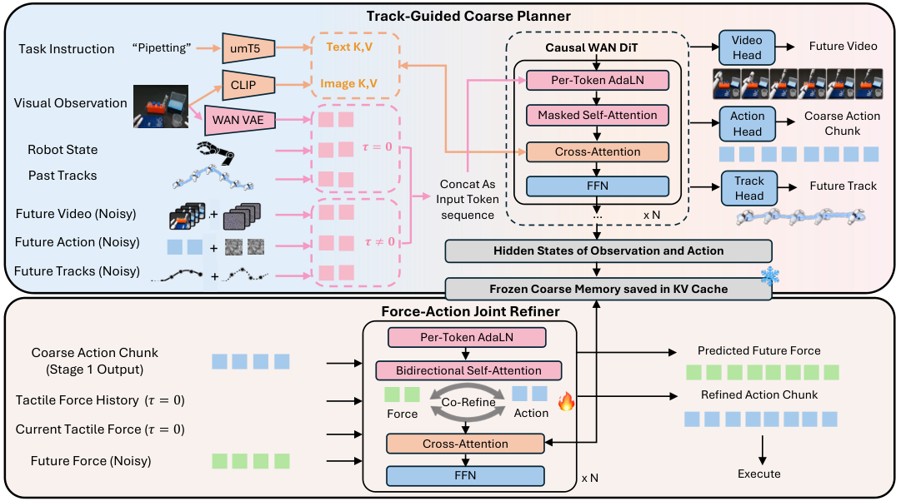
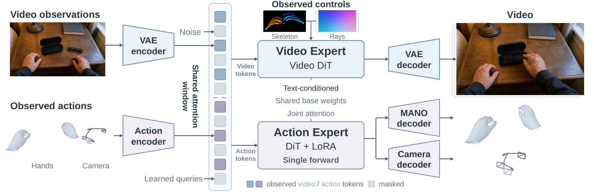
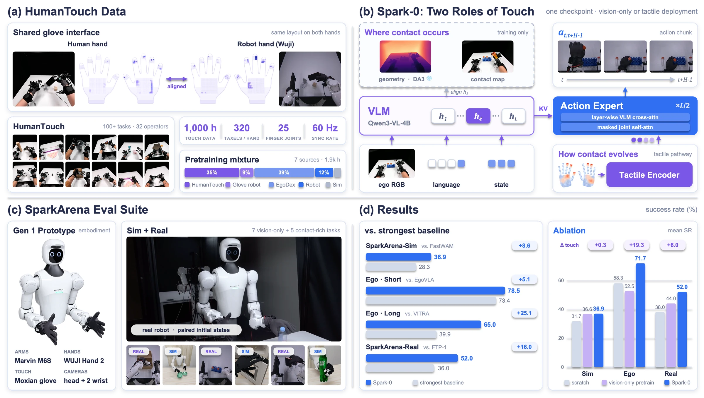
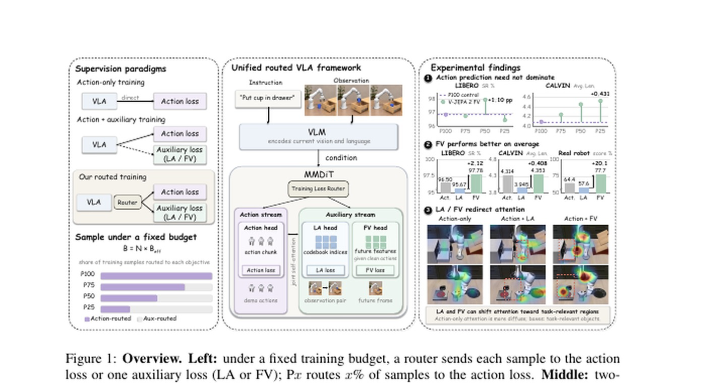
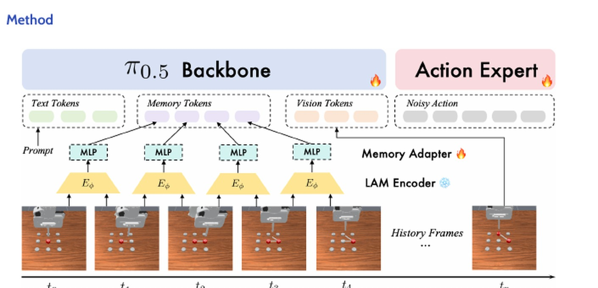
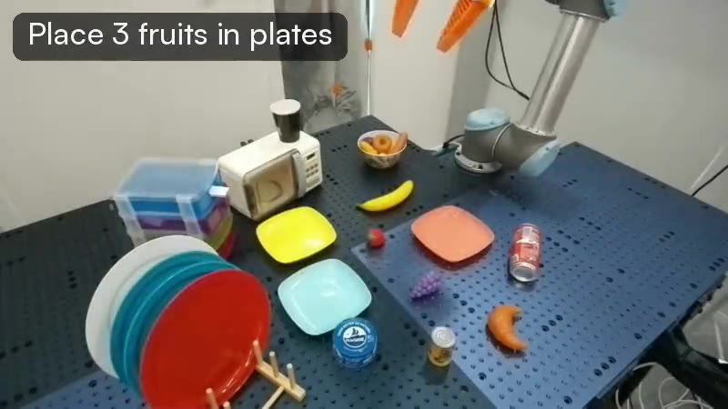
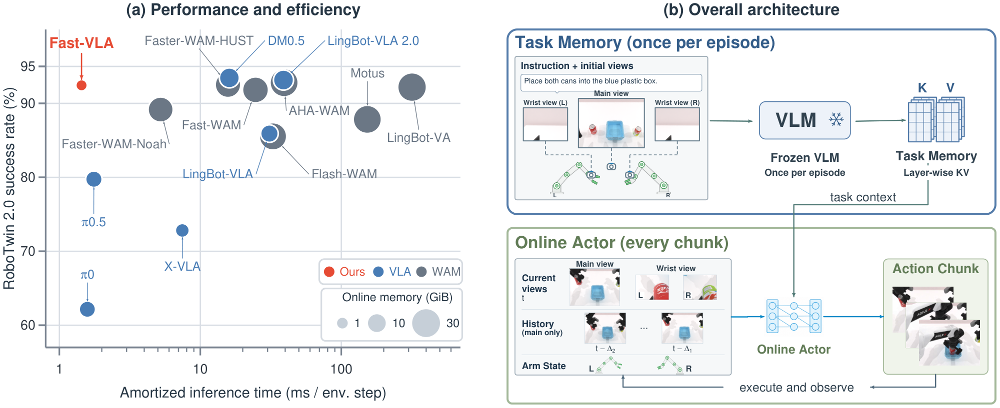

Five papers on a large-scale stress-test of GPT-6-Astra as a robot brain, online exploration without teleop data, a JEPA world model for humanoids, Mamba action experts for faster VLAs, and unified language-action-world modeling—plus the REKI coverage wave, the Dyna world-action-model debate, and a podcast conversation on open models for physical AI.
Papers
5 reads
01
Has GPT-6-Astra Achieved Embodied Intelligence?
SenseNova’s large-scale stress-test of GPT-6-Astra as a robot brain: unprecedented scores across 12 benchmarks (manipulation, humanoids, mobile, dexterous) under an in-context-learning protocol, plus a costly-but-effective “System 2 (GPT-6-Astra) + System 1 (π0.5)” harness — yet real-world trials on 8 robot configs expose gaps (expensive demos, no trading time for success under physics). Verdict: embodied competence crossed, practical embodied intelligence not yet.
A coding agent writes robot control code and improves purely through online exploration — no teleop data, no hand-engineered primitives. Multi-embodiment study (single-arm, bimanual, dexterous, mobile, humanoid; sim and real): +37.4% over baselines in sim; real robots learn memory-dependent, articulated, deformable, long-horizon tasks with emergent error recovery. From a heavyweight author bench (Abbeel, Ermon, Torralba, Dawn Song, Yilun Du). A credible path past the demo-data bottleneck.
BeJEPA: A Goal-Conditioned Humanoid Behavior World Model via Unsupervised RL
A JEPA-style world model for humanoids jointly representing posture, world position, and heading; cuts body-position error ~60% vs. baselines and runs on a real Unitree G1 (stand-up recovery, kick robustness, goal tracking).

BeJEPA’s joint-embedding world model tracks world goals while holding body-frame pose.
MambaAct: Efficient Mamba Action Experts for Flow-Matching VLAs
Replaces the π0.5-style Transformer action expert with a compact Mamba expert plus a context compressor: 10× smaller expert, 64.8% lower denoising latency on LIBERO (58.8% real-world), while improving LIBERO success ~1 pp. A direct attack on VLA inference latency.
LAW: Unifying Language, Action, and World Modeling for Agentic Physical Intelligence
Closed-loop VLM–world-action-model framework: a hybrid-expert VLM plans subtasks fused with a mixture-of-Transformer-experts video–action world model. 94.21% avg success across 50 RoboTwin tasks (claimed open-source SOTA); 65% vs. 28.3% π0.5 on three real long-horizon tasks. Evidence that language reasoning + world imagination + action generation compose better than any one alone.
Public outlet MarkTechPost broke down Kyutai’s REKI — the first open VLA (2.4B) with cheap rolling robot memory (last 3 frames, 32 register tokens, <1% overhead), pretrained only on public data; 90.4% on LIBERO-Plus, pose oscillation cut from 18.6% to 4.1%.
Weekend debate: Dyna’s pivot from VLA to world-action models
A Threads post distills co-founder Jason Ma’s claim that lab success (99.4%) collapsing to 75% in commercial deployment (Din Tai Fung) exposes VLA’s teleop-data bottleneck — world-action models (predict video, then act) are the proposed answer. This is the weekend’s central embodied-AI argument.
Podcast Updates
1 episode
01
Practical AI — “Open models and the future of Physical AI with NVIDIA” (Oct 1)
Daniel Whitenack interviews NVIDIA Cosmos Lab’s Ming-Yu Liu on open world models and physical AI. Missed in earlier briefings; directly on-topic for the world-model thread.
Note: TWIML’s latest (#780, Oct 15) is about e-commerce ranking, not robotics; Robot Brains has no new episode in the window — no other fresh robotics episodes today.
Past issues
Briefing archive
Open any date to read the full issue. All archived links lead to their original sources.
Sunday · October 18, 2026Open
Papers
Dexterity from Supervised Play (Botao He, Yiming Dou, Yiannis Aloimonos, Jitendra Malik, Akash Sharma, Ruoshi Liu — UC Berkeley)
A play policy cloned from minutes of human play autonomously collects contact-rich data to train a world model, then plans under it — beating hindsight behavior cloning by 69.6% on a real multifingered hand with 490x less interaction than RL, zero task demos needed.

A play policy cloned from minutes of teleoperated play collects the data that trains the world model.
CoDA: Co-Evolution of Data Engines and Action Policies (Tianjiao Yu et al.)
A sim data engine and action policy co-evolve via a shared memory of builds, failures, and progress; a VLM critic diagnoses failures and generates targeted hard cases. OOD success jumps 5.3% to 27.6%, and 15 rounds lift LIBERO-Pro success 25% to 84% under perturbations.

CoDA’s shared memory lets the scene generator and the action policy improve each other.
FACT: A Multimodal Force-Action-Track Foundation Model for Human-to-Robot Dexterity (Zhi Cao, Yining Hong, Jiaolong Yang, Yejin Choi, Li Fei-Fei, Jiajun Wu, Huang Huang)
Pairs the new EgoForce human tactile dataset with a two-stage model: a track-guided coarse planner predicts actions, future video, and visual tracks, then a force-action refiner shapes actions with anticipated force. Up to 60pp over T-Rex on ten force-sensitive tasks.

FACT pairs a track-guided coarse planner with a force-action refiner.
I3L: Iterative Interactive Imitation Learning for Whole-Body Mobile Manipulation (Wensi Ai, Jiajun Wu, Li Fei-Fei, Ruohan Zhang et al.)
Low-cost open-source JoyLo+ interface (policy-tracking leader arms, touch-triggered takeover) feeds HG-DAgger iterations: +68.3pp autonomous success, at least 90% on every task, takeover time down 72% across four rounds.
JoyLo+ takeovers feed I3L’s iterative HG-DAgger rounds across three embodiments.
NEURA’s Neuron AI — one Perception-Language-Action brain across five embodiments
NEURA’s Neuron AI launch (Oct 14) is still making the rounds — a Perception-Language-Action model fusing 3D vision, touch, audio, robot state, and language with memory, one brain across five embodiments; the 11-minute autonomous 4NE1 laundry demo at NVIDIA GTC Berlin (Oct 20-22) is the proof test.
Kyutai’s REKI (2.4B VLA with cheap memory) continues to circulate — its 32 cached register tokens add memory for ~0.1 ms per chunk and cut pose oscillations on RoboTwin from 18.6% to 4.1%; weights are open (CC BY-NC-SA).
Researcher’s Guide to Physical AI — Ep 11: “Gemini Argon Comes Third on a Real Arm, Astra Stabs a Doll” (Oct 17)
Gemini 4 Argon’s robotics pitch vs. a real-arm benchmark (GPT-6 Astra led), the RoboHarm refusal test, NVIDIA AlphaNIST, and video world-model physics failures.
This edition covered five papers on dexterity from play, co-evolving data engines, force-aware human-to-robot transfer, interactive imitation for whole-body mobile manipulation, and symplectic world models, plus two field discussions and two podcast episodes. Images appear for every paper, from supplied representative figures.
Saturday · October 17, 2026Open
Papers
Perceive, Predict, and Plan: a Unified World Action Model for Egocentric Dexterous Manipulation (P³-WAM)
P³-WAM unifies three modes—Perceive (reconstruct 3D hand/camera motion from video), Predict (generate action-conditioned video futures), and Plan (jointly generate action trajectories and their visual consequences)—for egocentric dexterous manipulation. Unified training beats single-mode baselines on 3D hand reconstruction, video prediction, and goal-directed planning.

P³-WAM unifies perception, prediction, and planning in one world action model.
Value as Memory: Online Value-Guided Post-training for General Robot Policies (VaM)
VaM combines value caching—conditioning actions on recent value predictions as task-progress memory, mitigating partial observability—with online real-world RL fusing offline demos, off-policy interventions, and on-policy rollouts. Value caching adds +29.4% mean success and online learning +32.8% on long-horizon deformable and contact-rich manipulation.
VaM uses cached value predictions as task-progress memory for general robot policies.
Spark-0: Scaling Spatially Aligned Tactile Pretraining for Robot Dexterous Manipulation
Spark-0 is a vision-tactile-language-action (VTLA) model that uses touch two ways: image-space contact maps plus a frozen 3D geometry teacher supervise visual tokens during pretraining (removed at inference), while a tactile pathway encodes regional force histories. It is built on HumanTouch, a 1,000-hour full-hand tactile dataset; retaining touch raises vision-only success on Ego Humanoid from 52.5% to 71.7%.

Spark-0 aligns tactile signals with vision for dexterous manipulation pretraining.
What Should Robot Policies Learn to Predict? Rethinking Supervision Targets in Vision-Language-Action Learning
Studies how the VLA training budget should be split between action prediction and auxiliary objectives via a sample-level router—finding that latent-action and future-vision supervision can outperform action-only training even when action prediction gets ≤50% of samples. Future-vision targets (DINOv3, V-JEPA 2, Wan2.2) generally beat latent-action ones.

A sample-level router splits VLA training between action prediction and auxiliary supervision.
LTM: Latent Transition Based In-Context Memory for Vision-Language-Action Models
Latent Transition Memory stores manipulation history as compact latent transitions between consecutive observations (encoded by a frozen latent action model), giving the VLA bounded, incrementally built memory without external reasoning calls. On π0.5 it reaches 58.54% on RoboMME and 80.5% on LIBERO-Mem, lifting real-robot counting success from 11.25% to 82.50%.

LTM stores manipulation history as compact latent transitions between observations.
A reasoning VLA whose action expert is masked from the reasoning text it generates, matching explicit-reasoning success at up to 3.4× lower latency (arXiv 2610.17540, Oct 13).
Zhiyuan GE-Act 2.0 VLA robots deployed in Shanghai
Discussion of Zhiyuan’s GE-Act 2.0 robots deployed in Shanghai pharmacies and factories, paired with a trial world model predicting future states—claims data scaled 300h→30,000h, lifting unfamiliar-environment success 17.1%→44.1% with no retraining.
ChunkAct — action chunking for agentic robotics
Summary of ChunkAct (arXiv 2610.18874), which adapts action chunking for agentic robotics—+5.0 success points on LIBERO-Pro while cutting LLM calls 2.9× and input tokens 4.4× per episode.
No new episode relevant to robotics, VLA, or world models from the tracked shows in the last day or two.
This edition covered five papers on a unified world-action model for egocentric manipulation, value-guided post-training, tactile pretraining, VLA supervision targets, and latent memory, plus three field discussions; no notable podcast releases. Images appear for every paper, from supplied representative figures.
Friday · October 16, 2026Open
Papers
REKI: Registering Knowledge in VLAs
A 2.4B VLA from Kyutai/Inria pretrained on public data only, setting a new performance/size Pareto frontier on LIBERO-Plus, RoboTwin, and RoboCasa. It adds register tokens inside the flow-matching action expert for near-zero-cost recent memory via the KV cache, cutting pose oscillation ~4x in sim and on real robots. Fully open weights plus training, data, and deployment code.

REKI adds register tokens to the action expert for efficient recent memory.
Fast-VLA: You Only Think Once for Robot Manipulation
Calls a frozen 4B VLM exactly once per episode to encode the instruction and initial views into a fixed multi-layer key-value task memory; a lightweight online actor then fuses visual and proprioceptive feedback into action queries that retrieve task context from that memory. 92.46%/92.40% on RoboTwin 2.0 Clean/Randomized, 10.9–17.1x lower amortized inference time, only 1.22 GiB resident VRAM—an engineering path to high-frequency closed-loop VLA control.

Fast-VLA separates one-time task encoding from high-frequency closed-loop control.
VeriVLA: Adaptive Test-Time Verification for Flow-Based VLAs with Latent World Models
Addresses noisy action chunks from flow-based VLA sampling with a training-free dual-axis trigger that detects critical states, then ranks candidate action chunks in latent space using a JEPA-style latent world model—no pixel reconstruction. Real-task completion rises from 50.8% to 65.5% at only +326 ms per trigger on an RTX 4090.
T2-z: Test-Time Optimization of Environment Latents for Robotic World Models
Adds learnable environment latents to robot world models; two-stage training lets structured representations of friction, mass, and other factors emerge unsupervised. At test time the world model stays frozen while only the latent is optimized from one or a few real interactions, adapting to unseen configurations. Object prediction error 15.20 → 7.00, action success 33.73% → 72.96% across 7 sim scenes and 4 real tasks. Authors include Li Fei-Fei, Jiajun Wu, Leonidas Guibas, and Yejin Choi.
VLA-Δ: Learning Physical State Transition for Vision-Language-Action Models
Argues most VLAs fit observation-action mappings without explicit supervision of intermediate physical state changes, and instead supervises the physical transition between current and future states (~484 hours / 24M frames of multi-level annotations across DROID, MolmoAct, RH20T), with zero inference overhead. 98.4% average on LIBERO, 90.06%/89.74% on RoboTwin 2.0 Clean/Randomized, and beats π0.5 on real robots.
An animated explainer on the low-key open release of StarVLA, a VLA model reaching 95.7% on the LIBERO sim benchmark; notable for the team’s unusually honest flaw documentation (e.g., failing to stack simple blocks), its 62GB/80GB-GPU footprint, and research-only licensing.
AA-Robotics v0.1: frontier LLMs drive a real robot arm
Artificial Analysis’ new benchmark puts five frontier language models (GPT-6 Astra, GPT-6.1 Sol, Gemini 4 Argon, Claude Opus 5.5, Claude Fable 5.1) in control of a 6-axis robot arm across eight physical tabletop tasks (button pressing, pouring, block tidying, tower building, writing “hello world”). Astra leads (~69 pts) but every model runs ~100x slower and far costlier than a human. Shared by an AI research commentator on Threads.
CHORUS: one VLA policy for decentralized multi-robot teams
A single shared VLA backbone (π0.5 LoRA) adapted for decentralized multi-embodiment collaboration: each robot runs its own copy on local observations plus a robot-identity prompt, no communication at inference. Beats a centralized VLA upper bound and reaches 90% task success with three-robot teams.
A technical breakdown of RoboJEPA, a latent world model pairing a frozen V-JEPA 2.1 visual encoder with a trainable predictor conditioned on robot ID and view, trained across 12 robotic embodiments with prediction accuracy linked to planning performance. Shared by an AI research commentator on Threads.
No new robotics, VLA, or world-model episodes from the tracked shows in the last day or two.
This edition covered five papers on efficient VLA memory, test-time verification, environment adaptation, and physical-state supervision, plus four field discussions; no notable podcast releases.
Thursday · October 15, 2026Open
Papers
SafeDriveVLA: Navigation-Conditioned World Model Dreaming for Conflict-Aware End-to-End Autonomous Driving
A driving VLA that handles unsafe navigation instructions: it predicts an explicit three-level compliance mode (strict/cautious/fallback) and uses a navigation-conditioned latent world model to “dream” what obeying an instruction would cause. Reaches 88.16 Driving Score / 68.64% Success Rate on Bench2Drive and cuts collisions under unsafe instructions vs. SimLingo.
Graph-Reweighted Behavior Cloning with Human Interventions for Precise Robotic Manipulation (GR-BC)
Offline post-training for VLA models on precise, long-horizon manipulation: GR-BC builds a task-conditioned goal-reachability graph over demonstrations, intervention-assisted rollouts, and failed trajectories, then weights each action chunk by how much it reduces the remaining steps to success—without a reward model or progress labels. It averages 91% success across four real-world precise tasks with three VLA backbones.
KinoGen: Customizable Humanoid Loco-Manipulation References via Kinematically Grounded Video Generation
Synthesizes humanoid loco-manipulation motion references by conditioning a pretrained video generator on calibrated renders of the target robot and object, then reconstructing body, hand, and object trajectories directly in the robot’s configuration space—no human proxy or retargeting. Tracking policies trained on its references run on a Unitree G1 with dexterous hands.
AdaRSI: On-Demand Recursive Self-Improvement for Embodied Agents
A coding-agent harness that fine-tunes only failing sub-steps: it improves skills and harness first, attributes persistent failures by retrying saved-state sub-steps, and fine-tunes only the still-unreliable ones with self-collected demonstrations. On RoboCasa365 with GR00T N1.5 and zero human demos, it raises unseen composite-task success from 4.6% to 13.8% using only 28% of the GPU time of full fine-tuning.
Physical Time as a Missing Dimension of Robot Policy Memory Dynamics (Temporal Flow Policy)
Argues robot policy memories should evolve over measured physical time, not just observation steps: it learns a memory state whose transitions depend on elapsed intervals and conditions diffusion and flow-matching policies, including π₀.₅, on that state. It beats recurrent and state-space memory baselines on timing- and memory-sensitive real-robot tasks and LIBERO.
Google DeepMind’s Gemini 4 Argon teaches Apptronik’s Apollo humanoid to play cornhole (Oct 13)
The week’s biggest robotics conversation: watch a human throw, build the MuJoCo simulation, practice in sim, then make seven straight throws on the real robot. The model also scores 87% on Google’s ERQA embodied-reasoning benchmark.
Physical Intelligence opened the Pi API beta (Oct 13)
Hosted fine-tuning and inference for π0, π0.5, and π0.7: upload data, fine-tune on Pi-managed compute, then deploy through a hosted gateway.
A “Perception-Language-Action” robot foundation model fusing 3D vision, touch, audio, robot state, and memory. No benchmarks are published yet; an 11-minute autonomous laundry demo is scheduled live at NVIDIA GTC Berlin, Oct 20–22.
Latent Space — “Dyna-2: General Purpose Physical Agents with Hour-Long Autonomy — Jason Ma, Dyna Robotics” (Oct 13)
Dyna co-founder Jason Ma unpacks Dyna-2, a world-action model trained on more than one million hours of human video that pairs future-video prediction with robot action generation—hour-long autonomous workflows, world-action models vs. VLAs, diffusion transformers and flow matching, and why Dyna builds its own wheeled semi-humanoid hardware.
Latent Space — “Lab-in-the-Loop at Compute Speed — Ian Quigley, Leash Bio” (Oct 14)
Leash Bio’s Ian Quigley discusses taming DNA-encoded libraries for high-throughput interaction data and how that became “Minos”—an AI playground of tens of thousands of lab-in-the-loop simulations for RL agents doing verifiable scientific reasoning.
This edition covered papers on safety-aware driving, precise manipulation, humanoid motion, self-improvement, and physical-time memory, plus four field signals and two podcast conversations.
Wednesday · October 14, 2026Open
Papers
LoopWAM: Closed-Loop Generalist Policy Improvement from Deployment Rollouts
A closed-loop world-action model that learns from the full quality spectrum of real deployment rollouts—successes, failures, and suboptimal behavior—instead of expert demos alone. Three deployment-and-training rounds lifted real-world success from 23.7% to 43.3% on RoboChallenge Table30-V2, with best-overall results on RoboTwin 2.0 (94.5%) and RoboCasa365 (49.5%).
ForceWAM: Decoupling Future and Response Learning from Demo and Play Data for Contact-Rich Manipulation
Decouples contact-rich manipulation into two learned pieces: a world model predicting task-compatible visual–wrench futures from demonstrations, and an inverse-dynamics model learning execution from both demos and task-agnostic play. Hits 85–95% mean real-robot success on sliding, box flipping, and ring placement, with play data adding 15–45 percentage points.
ILA: Interaction Latents as Actions for Contact-Rich Manipulation
Encodes the evolution of motion, contact, and force into shared “interaction latents” used as policy action targets—post-training pretrained VLAs and world-action models—and supports offline improvement via expert-consistency rewards. Improves success by 21–36.5 points averaged over four real-world contact-rich tasks.
What Matters in Quality-Aware VLA Pretraining: A Benchmark and Empirical Study
Introduces AXIS-Bench to study how demonstration quality should be used in VLA pretraining (weighting vs. filtering vs. conditioning). Finds approach-aware episode conditioning beats plain behavioral cloning, and sim-to-real pretraining lifted real-world success from 9.6% to 31.7%.
WorldOracle: Benchmarking Action-Conditioned World Models against Real-World Executions
A benchmark that checks whether an action-conditioned world model’s predicted rollout actually reproduces what happens on the real robot—physical state correctness, interaction alignment, and multi-view coherence—evaluating seven representative models. Datasets, code, and leaderboard are to be released.
Tofufo Labs breaks down the world-action model study comparing Video-Then-Action vs. Action-Then-Video vs. joint training: ordering barely mattered, but robot-video pretraining jumped LIBERO-Long from 68.4% to 97.8%. Policy checkpoints not yet released.
Odyssey-3: “foundation world model that simulates reality”
Odyssey’s official research preview film circulated widely, showing dual-arm manipulation, humanoid, and driving applications from a single world model.
Apollo humanoid learns cornhole from a single video
DeepMind demo: Google’s Argon model watched one clip of a person tossing bean bags, mapped the scene, reasoned out the physics, wrote its own simulation to practice, and transferred the behavior to the Apollo robot.
Two Westlake Robotics humanoids cooperate to fold a pair of pants—bimanual multi-robot cooperation on a deformable object, framed as a world model plus whole-body “general brain.”
Latent Space — “Dyna-2: General Purpose Physical Agents with Hour-Long Autonomy” (Oct 13)
Jason Ma of Dyna Robotics discusses Dyna-2, a world-action model pre-trained on a million hours of human video that predicts future video to guide robot actions—scaling laws, diffusion transformers, and real commercial deployments.
This edition covered new VLA and world-action model research, robotics discussions, and podcast updates for October 14, 2026. Images appear only for papers with supplied representative figures.
Tuesday · October 13, 2026Open
📄 Papers
Evo-World: A Lightweight VLA with Future Motion Prediction via Optical-Flow Supervision
A 0.87B VLA that learns from predicting future motion in latent space, supervised by optical flow between frames—decoupling representation learning from action optimization. It reaches 91.1% on Meta-World MT50 and beats baselines on real AgileX single-arm and bimanual tasks at lower GPU memory and higher inference speed, showing motion-focused prediction (not appearance reconstruction) is the auxiliary signal that matters.
Beyond Actions: Learning Future Operation Targets for Vision-Language-Action Models
Introduces Action–Future Coupled Effect Learning (AFCE): instead of predicting raw action chunks, the VLA predicts a future-grounded physical “Effect,” decoded into actions by a state-conditioned decoder. It scores 50.97% on DexJoCo (+11.8pp over pi-0.5) and leads all five bimanual tasks, reframing VLA training around “what the command should achieve” rather than “what to command.”
Dual-Stream Memory for Vision-Language-Action Policies
Splits VLA memory into two streams: a task-agnostic gated DeltaNet compresses history into one temporal token, while a task-conditioned retriever keeps the most relevant frames. It reaches 49.2% across 16 RoboMME tasks and 62.5% vs 37.5% on four real-robot tasks, with the biggest gains on repeated actions—and is refreshingly honest that cup-swap failures expose identity tracking as still unsolved.
RESCUE: Counterfactual Evaluation of VLA Runtime Monitors
Runtime failure monitors are usually judged by detection accuracy, but an accurate alarm may arrive too late to act on. RESCUE restores sim and policy states at checkpoints to measure whether alarms actually enable useful interventions: with OpenVLA-OFT and pi-0.5 over 128k counterfactual branches, even an idealized detector affords only a 2.0–3.3% false-alarm rate. A practical lens for real deployment, tying monitor evaluation to intervention economics.
Reflex: Visually Grounded Reactive Humanoid Control
A three-stage framework for reactive whole-body humanoid control, tested on catching thrown boxes: state-based RL learns catching, a policy infers box dynamics from delayed observations, and an egocentric RGB-D encoder recovers the dynamics directly from vision. A real Unitree G1 catches human-thrown boxes at 65%/40% success at 2.5/5 m—76%/59% of human catchers—with the project page carrying rollout videos and an interactive demo.
OpenWAM: Stanford’s open framework for composable world-action models
An explainer on Stanford’s OpenWAM paper: video-then-action vs joint ordering barely matters—causal robot-video pretraining (+29.4 pts on LIBERO-Long) matters most. Caveat: explainer account; composability evidence is mostly in sim.
Manus VR gloves driving two robot arms for a kitchen task
Aadeel Akhtar teleoperates two Nero robotic arms with Manus VR gloves as “leader arms”: pick up a water bottle, fill it at the faucet, set it down—with a laptop showing synced 3D models and a depth feed. A creator showcase of teleop practice rather than new research.
Octopus-inspired morphing soft gripper from U. Michigan
Wevolver covers a U. Michigan M|ROBOTICS demo of an octopus-inspired morphing soft gripper: 20–200 mm grasp range, roughly $105 3D-printed, open source, citing the paper “Whole-Body Proprioceptive Morphing.” Credible engineering outlet, though the performance claims are demo-level.
Arirang News covers a KAIST showcase: the 6-foot humanoid DPiBOT moonwalks and lifts 15 kg, plus ship-simulation robot control and quadruped navigation. Showcase demos rather than benchmarks.
No new robotics, VLA, or world-model episodes from the tracked shows in the last couple of days.
Covering roughly the last 24 hours—arXiv cs.RO / cs.AI / cs.CV / cs.CL new listings, social chatter, and podcast feeds. The Tuesday arXiv listing had not announced at sweep time, so the papers came from the remainder of Monday’s listing.
Monday · October 12, 2026Open
📄 Papers
SmolWAM: A Latent World-Action Model for Robotic Manipulation on Edge Devices
Distills the 2B-param Cosmos Policy video WAM into a 0.88B latent world-action model — single-frame latents, cached text features, and a one-step rectified-flow readout — hitting 95.5% on LIBERO at 57ms per action chunk: 11× faster, 18.5× fewer FLOPs than the teacher, trained in 3.6 GPU-hours. A practical recipe for getting WAMs onto edge devices.
Splat2Act: From Captured Scenes to Personalized VLA Manipulation
An automated real-to-sim-to-real pipeline that personalizes pi-0.5 to a user’s actual home or office from just a handheld phone scan plus object photos: it builds a building-scale 3D Gaussian-splat digital twin with collision geometry, auto-discovers receptacles, and generates 68k+ demos with a privileged simulation oracle — zero teleoperation. The personalized policy scores 62.5% pickup in the target scene vs. 0% for vanilla pi-0.5, and 63.9% on a real Stretch 3. A direct attack on the VLA “last-mile personalization” problem.
Dream to Remember: Continual Steering of Generalist Robot Policies with World Models
Instead of fine-tuning a generalist policy (and catastrophically forgetting), this keeps the policy frozen and trains only a small input-noise steering module — with a frozen pretrained world model rehearsing prior tasks through imagined rollouts, no replay buffer or new data. On CALVIN it learns 8 tasks in sequence entirely in imagination (63.7% → 74.8% avg success, vs. 11.7% collapse for LoRA fine-tuning). Neat insight: rehearsal demands far less world-model fidelity than optimization.
LAPT-Scale: Scaling Embodied Policies with Latent Action Pre-Training on Human Videos
Learns continuous (not vector-quantized) latent actions from 23.3K hours of egocentric human video via perceptual, semantic, and optical-flow alignment, then pretrains a VLA on those latents before embodiment alignment and post-training. Real-robot success climbs 63.3% → 85.0% as annotated human video scales 1K → 5K hours — pushing the “human video as action supervision” trend toward fine-grained continuous latents.
Adapts frozen flow-matching VLAs by learning a context-conditioned distribution over the noise space instead of touching weights — framed as a general interface accommodating PPO, SAC, and AWR, with an information-theoretic argument for why noise-space learning is efficient and practical guidance on which variant fits which compute/safety regime. Evaluated on LIBERO, RoboTwin, and four real-robot manipulation tasks. A companion, from a different angle, to yesterday’s LeWAM noise-space MPC idea.
AI-narrated explainer announcing Runway’s Praxis-1, a world-action model that learns robot movement from video pretraining rather than hand-collected demos, claimed to be testing with Noble Machines, Standard Bots, and Ultra-Robotics with an open-weight release planned. Treat as unconfirmed rumor for now — single small creator account, no corroboration yet.
CCTV profiles Beijing’s Lightwheel data platform (claims 1.5M+ hours of human task video plus synthetic sim data), 70+ embodied-AI training centers operating across China with 40+ more under construction, and Shenzhen wheeled humanoids doing control-cabinet and valve tasks at 80–90% success. State-media framing — figures are company/official claims, not independently audited.
DW Shift video arguing home humanoids like 1X’s NEO and NEURA’s models lean on VR-headset teleoperation behind the demos, quoting Rodney Brooks that the industry is “designed to trick you”; notes firms record teleop data to train future autonomy, closing on the privacy trade-off. Editorial perspective — teleoperation during development is standard practice, not proof the demos are fraudulent.
NVIDIA Robotics announces the GTC Berlin (Oct 20–22) session “From Generating Pixels to Understanding Worlds,” with speakers from NVIDIA, LTX, Black Forest Labs’ Robin Rombach, and Vesoma — a strong signal that generative-world-model-to-robotics is a headline track this fall.
Nothing notable today — no new episode relevant to robotics, VLA, or world models from the tracked shows in the Oct 9–12 window.
All links verified today. Papers come from Monday’s arXiv new listing (submitted Oct 8–9) and are all new vs. the Oct 9–11 briefings; arXiv abs pages and project pages were opened before linking. Images are CID-embedded inline (no external hotlinks); only SmolWAM and Splat2Act had verified project pages with suitable images — the Splat2Act WebP was converted to JPEG for Outlook. Absent project pages or images for the other papers are noted honestly, not filled in.
Sunday · October 11, 2026Open
📄 Papers
LAC-WM: Cross-Embodiment Robot Foundation World Models with Latent Actions
A world model conditioned on a learned unified latent action space shared across robot embodiments (plus human data) instead of explicit per-robot actions. It boosts downstream adaptation to unseen embodiments (+46.7% relative on dexterous tasks, +11.7pp on LIBERO) and scales positively with more pretraining embodiments — where explicit conditioning degrades. Stanford / Meta FAIR Robotics.
SimVLA: Zero-Shot Sim-to-Real VLA Learning for Mobile Manipulation
A VLA trained entirely on synthetic simulation data — SimAction (35 mobile-manipulation tasks from composed atomic skills), SimVQA (privileged spatial/geometric VQA), and SimDeploy rollout data — with zero teleoperation. It transfers zero-shot to real homes for restocking, pouring, and cleaning, outperforming policies trained on 50 in-domain real-world demos.
MiniWAM: Learning Compact Future Targets for Efficient World-Action Modeling
Instead of predicting high-dimensional native visual futures, MiniWAM predicts compact PRISM targets learned via inverse-dynamics and reconstruction supervision. With 65× fewer future tokens, the 0.25B model trains up to 8× faster and matches much larger WAMs/VLAs (LIBERO 97.2%, LIBERO-Plus 73.6%, RoboTwin 2.0 46.1%) — world-action modeling without native visual futures.
LeWAM: A JEPA World Action Model with Diffusion-Steering-Based MPC
NVIDIA’s decoder-free JEPA-latent world-action model, trained jointly on forward, backward, inverse-dynamics, and policy prediction — its latent resists visual distractors far better than reconstruction-based WAMs. The key trick: planning MPC in the diffusion policy head’s noise space rather than raw actions, so the planner can’t exploit dynamics-model errors.
ARC: A Reasoning Recipe for Robot Foundation Models
Instead of bigger models or more demos, ARC auto-labels existing DROID demonstrations with action-grounded causal reasoning traces (ARC-Trace-DROID: 75K demos, 1.2M frames) and fine-tunes π₀.₅ and Cosmos3-Nano-Policy to use them. Real-robot π₀.₅ success rises 82.2 percentage points, with new SOTA on RoboLab-120 and MolmoSpaces — the largest zero-shot RFM gains to date without new robot data.
Infographic tracing the field’s shift from VLA (“Perceive → Act”) to world action models (“Imagine → Act”), built around NVIDIA’s DreamZero 14B video-diffusion WAM — claiming 2× zero-shot gains over pretrained VLA, 30-minute adaptation to new robots, and #1 on RoboArena/MolmoSpaces, with an honest caveat on visual-memory limits.
“ROBOTIC LOGIC SHIFT”: the Embodied Turing Machine pitch
Animated explainer arguing stateless VLA policies waste ~50% of GPU cycles on “policy sampling drift” and pitching an Embodied Turing Machine with a persistent memory tape plus bimanual trajectory library (claimed 70.2% vs 41.8% on the RoboDojo bimanual benchmark). Bold claims from a very small account — file under discussion, not verified result.
A bench-mounted arm autonomously picks a small cube into a tray after 50 episodes / 30k steps of ACT training; the author is upfront that the policy only works inside the training zone and says a VLA is next — a nice grounded counterpoint to the hype-level claims above.
Claire Asher talks with Brookhaven National Laboratory’s Kushant Patel about software that lets robots perceive, map, and move through scientific facilities like particle accelerators and synchrotron beamlines.
All links verified today. arXiv publishes no new listings on weekends, so today’s papers come from the Friday Oct 9 listing (submitted Oct 7–8) and are all fresh vs. the Oct 9–10 briefings. Project pages were opened before linking; only papers with a verified official page carry one (LeWAM has none yet).
Saturday · October 10, 2026Open
📄 Papers
VioLA: Learning Generalist Humanoid Control Policies from Human Data
A generalist humanoid policy trained on 140.6M motion frames (93.2% human) that predicts body/hand motion latents instead of joint commands, so human recordings directly label the action space. Zero-shot on the real robot it reaches 100% locomotion success (vs 16.7% for GR00T N1.7 and 0% for Ψ₀) and 88.6% manipulation success with no task-specific fine-tuning.
Humanoid World Action Model With Joint State–Action Generation
A humanoid world-action model that jointly generates reference actions and the robot's post-execution proprioceptive states, explicitly closing the action–execution gap where a VLA/WAM reference differs from what the whole-body controller realizes. It posts the highest success among baselines on three real-robot tasks on the LimX OLI humanoid (70.6% on Candy Picking vs 43.3% for Fast-WAM).
Dex-One2Many: Learning Dexterous Manipulation from a Single Human Demonstration
A real-to-sim-to-real framework that abstracts one human video into sequential scene graphs (grasp/contact/inside relations) to guide RL with diverse reset sampling and dense stage rewards. Trained entirely in sim, it transfers zero-shot to a real multi-fingered hand and beats baselines by 71% on unseen object poses, goals, and grasps across five tool-use and manipulation tasks.
Generative Neural Retargeting for Human-to-Robot Dexterous Manipulation
Generative Neural Retargeting (GNR): a flow-matching model that samples dynamically feasible robot trajectories from a low-dimensional manifold conditioned on human motion, replacing per-trajectory MPC/RL optimization (56.2% vs 27.2% success using only 8.5% of MPC's samples). Inside a real-to-sim data engine it produced a 223k-demonstration dexterous dataset with dense contact-force labels across 3.3k object geometries.
WARP-VLA: Wrist-Camera Adaptation for View-Robust Policy Execution in Vision-Language-Action Models
A plug-and-play VLA module for wrist-camera robustness: a Mixture-of-Experts architecture where each expert learns view-specific feature transforms and a router combines them from implicit view cues — no camera extrinsics needed at deployment. It lifts pi-0.5's LIBERO success from 39.2% to 78.3% under wrist-view perturbations, with sim-trained adaptation transferring to diverse real-robot camera setups.
Coverage of Odyssey's Oct 8 launch of Odyssey-3, pitched as one shared world model driving cars in India, controlling humanoids, flying drones, and playing GTA V. Discussion centers on its 66.1 Physics-IQ Verified score and the "best-of-eight" evaluation caveats.
Show-Harness: VLM agents play robots, "no VLA training needed"
Research demo from Show Lab @ NUS (Somi AI) showing off-the-shelf VLMs — Claude Opus 5 zero-shot, or a fine-tuned 2B model at 26 Hz — controlling different robot arms via discrete GRASP/MV_UP-style actions, with two-arm coordination and real-world deployment.
Breakdown of NVIDIA's Oct 7 Long-WAM paper on scaling world-action model visual context for real-time control: giving the robot a few seconds of video memory lifted moving-cup stacking from 0/20 (rival systems) to 19/20 — one of the week's most-discussed world-model results.
World AI Summit Amsterdam: humanoids steal the show
Report from the Oct 7–8 World AI Summit in Amsterdam spotlighting crowd-drawing Chinese AI robots, interviews with NVIDIA's Simon See, and plans for a China edition — the event driving much of this week's humanoid/embodied-AI chatter.
No new episodes from Latent Space, TWIML, Practical AI, Robot Brains, or related shows in the last few days touch robotics, VLA, or world models.
All links verified today. arXiv does not publish new listings on weekends, so today's papers reflect the Friday Oct 9 listing (papers submitted Oct 8). Project pages were opened before linking; only papers with a verified official page include one.
Friday · October 9, 2026Open
📄 Papers
PLaW-VLA: Predictive Latent World Modeling for Vision-Language-Action Policies
A VLA policy that models task-relevant future states in a pretrained, prediction-oriented latent space — no low-level visual reconstruction — with a Mixture-of-Transformers backbone conditioning actions on history, task semantics, and predicted futures. It beats reactive policies by 11.8 points on RoboTwin Hard Horizon III and matches generative world-action modeling at roughly 1/19 the inference latency. (CoRL 2026.)
UNITAS: A 3D-Native World Action Model for Embodied Manipulation
The first 3D-native world action model: observations, actions, and scene dynamics share a metric 3D frame per interaction (action flow as 3D hand/gripper trajectories, scene flow as conditioned displacements), with one representation across robot embodiments and human hands. It cuts action-conditioned scene-prediction errors up to 49% versus PointWorld on RoboTwin, hits 99.8% on LIBERO, and averages 85% on real-world tasks.
Being-M0.7: A Latent World-Action Model for Humanoid Robots
A latent world-action model for humanoid loco-manipulation: visual-motion priors learned from 10,000+ hours of mixed-modality human data (video-only, motion-only, paired), then grounded into executable whole-body commands via robot mid-training and an action-expert post-training stage. Highest aggregate success among baselines on SIMPLE and matches the strongest baseline on real-world Unitree G1 loco-manipulation.
DreamTrue: Action-Faithful Robot World Model with Counterfactual Post-Training
A multi-view, cross-embodiment world model for action-faithful video prediction: action trajectories are rendered into image-space conditions via offline geometric calibration, then counterfactual post-training (modified actions → futures under wider action/contact coverage) is steered by RL with an embodied video reward model trained on human-annotated defect data. Ranked #1 in the world-model track of the AgiBot World Challenge 2026; human-assessed interaction defects fall from 48.12% to 6.25%.
PathTime-VLA: Path-Time Decoupling for Factorized Post-Training of Vision-Language-Action Policies
Decouples the path a robot follows from how fast it moves — a progress-indexed interaction path plus a learned time profile — with staged post-training (demos + DAgger prior → Speed-DQN execution multipliers → Path-AWR diffusion path refinement). Scores 58/60 versus 57/60 for the BC+DAgger baseline, with roughly 39–52% shorter mean completion times — faster execution without changing the geometric plan.
Odyssey’s new world model is claimed to drive a real car on Indian roads (from ~20 hours of training data), control humanoids, fly drones, and play GTA V — scoring 66.1 on Physics-IQ Verified (best-of-8). The biggest robotics launch story of the window. — The Next Web on Instagram (Oct 9).
A counterweight to the hype: the 66.1 score was best-of-eight runs, the results are Odyssey’s own with no independent test, and Odyssey itself disclaims that real machines still need their own testing. — AI Lab Wire on Facebook (Oct 9; small account).
Daimon TWM: touch-sensing world-model humanoid live at IROS 2026
Daimon Robotics showed a humanoid at IROS 2026 in Pittsburgh threading beads and making fruit skewers while predicting slip and force in real time — pitching touch as the next leap for world models. — via Nic Conley on Facebook (Oct 8).
Marc Raibert: “70% success is like it doesn’t work”
The Boston Dynamics founder says VLA models have improved from 50% to 70% success — but 70% is “like it doesn’t work, right?” — and most impressive robotics demos remain human teleoperation. A sharp follow-up to yesterday’s “Reality Check” benchmark debate. — an AI research commentator on Threads (Oct 8; AI Pulse digest).
None of the tracked shows (Latent Space, TWIML AI Podcast, Practical AI, Robot Brains) released a VLA / robotics / world-models-relevant episode in the last week. Practical AI’s latest (E375, Oct 8) covers narrative intelligence and work; Latent Space’s latest (Oct 8) is on AI for materials discovery; TWIML is still on #779 (covered Oct 7).
Covering roughly the last 24 hours — arXiv cs.RO new listings (Oct 8–9), social chatter, and podcast feeds. All links verified before sending. Email edition carries an embedded teaser image only for PLaW-VLA (its verified project page publishes one); other papers had no verifiable teaser image.
Thursday · October 8, 2026Open
📄 Papers
Long-WAM: Scaling the Context of World-Action Models
An NVIDIA-led team scales causal world-action models to ~19 seconds of visual history under real-time control (107 ms per action chunk on an RTX 5090). The key finding: long context only pays off when the video foundation is pretrained autoregressively, not bidirectionally. It hits 95% on dynamic cup stacking with a Unitree G1 — where π0.5 and Fast-WAM scored 0/20 — plus best results on LIBERO-Long, RoboTwin 2.0, and DOMINO.
The first scaling laws for multi-embodiment robotic world models: a JEPA-based latent model trained across 12 robot embodiments whose “imagination error” follows a clean power law in compute and predicts downstream planning quality — a cheap proxy for costly real-robot eval. The 8B model is the largest JEPA predictor trained to date and plans zero-shot toward a goal image on real hardware; checkpoints and code are released.
Video Prediction Policy 2: Predict Better, Act Better (VPP2)
Diagnoses why world-action models stumble on open-ended tasks (video foundations not optimized for manipulation; naive action coupling hurts generalization), then fixes it with event-level video pretraining on captioned manipulation clips, distillation into a single-step visual planner, and a mixture-of-transformers action expert. Beats Cosmos3-64B by 11 points on open-ended instruction following and the strongest baseline by 18.5 points on real-world zero-shot ALOHA manipulation.
RealtimeWAM: How Fast Can I Run My World Action Model?
A training-free inference-acceleration recipe for WAMs — overlapping observation encoding with prediction and adaptively reusing cached features in visually stable regions — delivering 8.9×/10.7× speedups on FastWAM/OpenWAM (24–63 ms on an RTX 4090) with success rates within ~0.5 points of native inference, and +17–37 points across five real-world tasks. A practical plug-in latency fix for the whole WAM family.
ΔWAM: Distilling Action Tangent Fields into World Action Models
Argues WAM supervision wastes capacity on action-irrelevant scene persistence, so it distills “action tangent fields” — how action variations change future dynamics — into the model, focusing denoising on what actions actually change. Without any large-scale embodied pretraining, it beats pretrained policies on lighting/background/camera/layout shifts in LIBERO-Plus, RoboTwin, and RoboTwin 2.0-Plus — a striking counterpoint to the scale-everything trend.
GraduateML’s robotics control tier list goes viral
An animated reel ranking robot control paradigms — PID (F), end-to-end (D), imitation learning (C), RL (A), and world models (S) — crystallizing the community consensus that predictive world models are the direction to win; ~8.3K likes and 62 comments, the most-engaged robotics post of the window. — an AI research commentator on Instagram (Oct 7).
“Workhorse”: 1–2 hours of human demo becomes humanoid skills
Work from Songbo Hu’s team at UC Berkeley: five wearable trackers plus one RGB camera — no retargeting — transfer directly into a Unitree G1 doing fully autonomous suitcase pushing/climbing, reactive box-catching (~0.56 s airtime), and shrugging off hockey-stick perturbations — a striking data-efficiency result for humanoid loco-manipulation. — an AI research commentator on Threads (Oct 7).
Debate over “Reality Check,” a new manipulation benchmark
The benchmark bills itself as the first public robot-manipulation benchmark but releases only half its tasks, holding the rest back to catch models that game the public set — sparking a healthy debate (relayed from Lucas Beyer’s X commentary) about how to honestly evaluate VLA-era robot policies. — an AI research commentator on Threads (Oct 7).
Practical AI #374: “Open models and the future of Physical AI with NVIDIA”
Daniel Whitenack and Chris Benson talk with Ming-Yu Liu, VP of NVIDIA’s Cosmos Lab, on open world models (Cosmos), how they help AI understand and simulate the physical world, and where physical AI goes next. Directly on-topic for world models and robotics. (Oct 1)
Covering roughly the last 24 hours — arXiv cs.RO / cs.AI / cs.CV / cs.CL new listings, social chatter, and podcast feeds. All links verified before sending. Note: no verified project pages for today’s papers (Long-WAM’s page is not yet live), so this edition carries no embedded paper images.
Wednesday · October 7, 2026Open
📄 Papers
OpenWAM: An Open Framework for Composable World-Action Models
Stanford (incl. Fei-Fei Li, Jiajun Wu) introduces the first open, composable framework for world-action models: causal robot-video pretraining of Wan2.2-5B on ~3.34M trajectories, plus a Mixture-of-Transformers action expert. It reaches 98.6% mean success across four LIBERO suites and ~92% on real bimanual tasks — and shows counterfactual (non-demo) data sharply boosts dynamics transfer (84% vs 47%).
A 3D-consistent world model for manipulation: the authors calibrate DROID into DROID-3D (71,100 episodes, dense metric depth, <0.7 px reprojection error), then train an SVD-based model that jointly predicts multi-view RGB and depth via spatial latent tiling. Depth supervision itself improves RGB prediction (+1.48 dB PSNR) and yields metric depth for geometric reasoning.
EgoLAP: Learning from Egocentric Human Data through Language-Action Reasoning
A VLA pretraining framework that jointly learns from egocentric human video and robot trajectories through a shared language-based action chain-of-thought. Trained on ~10k hours, it reaches 80.1% mean real-world task progress zero-shot on an unseen bimanual robot — a 2.3× gain over alternative action representations.
ACG-WAM: World-Action Modeling via Action-Conditioned Geometric Latent Prediction
A world-action model (BIT + LimX Dynamics) with an ACG-JEPA objective that predicts geometric features at horizons {1,2,4,8} from a frozen VGGT encoding. Best mean on 50 RoboTwin 2.0 tasks (93.07%) and 85% on three real bimanual tasks; the geometry supervision modules are removed at inference, so the signal is free at deployment.
CoRP: Compact Robot Policies Need Fine-Grained Visual Representations
A deliberately tiny 48.9M-parameter policy (DINOv2 + one-block flow-matching head, no VLM) hits 97.0% on LIBERO — matching systems 41–164× larger. Ablations argue most manipulation-policy gains come from the visual representation, not scale: pretrained (not frozen) init and a tight 48-token instruction-conditioned compression budget do the heavy lifting.
Unitree's UnifoLM-WLA-1.0: a 6B humanoid foundation model
A breakdown of Unitree's newly released (Sept 28, Apache 2.0) 6B-parameter humanoid foundation model unifying 64 whole-body and tabletop-manipulation tasks via a flow-matching decoder, trained on ~2,500 hours of real-robot data. — AI Dev Hub on Instagram (Oct 7).
ICONIQ bets on a single shared “robot brain”: Physical Intelligence's pi-zero
At ICONIQ's Frontier event (Oct 5), Physical Intelligence co-founder Sergey Levine argued a single shared robot foundation model — not task-specific engineering — is the future, spotlighting pi-zero, a VLA trained on 7 robot configurations and 68 tasks, with a mobile-manipulator laundry demo. — The Agent Times on Instagram (Oct 7).
Boston Dynamics shows off next-gen fully autonomous hands for Atlas: twirling a drumstick, rotating golf balls, and threading a nut onto a bolt — designed for high-fidelity simulation to enable sim-to-real RL. — Wevolver on Threads (Oct 5).
TWIML AI Podcast #779: “Why Jev Is Changing How We Build With AI” with Diogo Almeida
Sam Charrington interviews TypeSafe CEO Diogo Almeida on Jev, a “System One” model built for machine-native intelligence via RL from calibrated decisions — arguing text-optimized LLMs are a poor fit for the decisions real-world software needs. More AI-models than robotics, but a notable current topic. (Oct 6)
Covering roughly the last 24 hours — arXiv cs.RO / cs.AI / cs.CV / cs.CL new listings, social chatter, and podcast feeds. All links verified before sending.
Tuesday · October 6, 2026Open
📄 Papers
SimForcing: Distilling Simulation Motion Priors into Real-Domain Robot World Models
An action-conditioned robot world model that distills motion priors from a simulation teacher via latent-motion distillation — aligning temporal changes in latent space to sidestep the sim/real appearance gap. It tops PSNR/SSIM/LPIPS/FVD on Bridge without external embodied pretraining, and initializing a VLA from its experts lifts LIBERO success from 82.6% to 89.2%.
SUAVE: Unified Video-Action Models via Masked Diffusion
A single masked-diffusion transformer that represents video, action, and language as discrete tokens in one shared sequence — the masking choice at inference turns the same network into a world model, a robot policy, or a video-action model. On a real robot it generates subgoal images plus 1-second action chunks in ~1 second, and co-training on human video substantially improves zero-shot robustness to distribution shift.
Mulligan: Performance-Guided Data Collection for Efficient On-Robot Learning
Reframes supervised on-robot data collection: each collection round starts from the policy's observed failures and untried states, and interactive imitation learning is augmented with a value function trained on all data — including the failures imitation learning normally discards. Across 2,550 blinded held-out episodes on three real high-precision tasks, it improves final success by 10–34 percentage points over uniform collection at matched budgets.
I-BFM: Reward-Conditioned Robust Humanoid Interaction via Unsupervised Reinforcement Learning
The first behavioral foundation model for humanoid–object interaction: forward-backward representations plus unsupervised RL learn the coupled dynamics of humanoid, object, and contact, so one policy handles carrying, pushing, kicking, goal reaching, and long-horizon task chaining with no task-specific retraining. It holds 94.3% success on Carry and 89.3% even after falls, with real-world demos on a Unitree G1.
Converts human video demos into robot trajectories through a differentiable physics-grounded simulator, combining contact-aware kinematic retargeting with force-aware dynamics retargeting. On 130 DexYCB/HOT3D demos across seven dexterous hands it gains 35–53 percentage points of success over the baseline, with open-loop transfer to MuJoCo and real-robot execution.
Runway enters robotics with open-weight Praxis-1 world action model
An AI research commentator on Instagram (Oct 5) breaks down Runway's first “world action model” — trained on web video rather than teleoperation data, adapting across robot bodies, released as open weights. The announcement is corroborated by The Robot Report.
Daimon Robotics launches Daimon-TWM, a tactile-grounded world model
Analyst Ronald Van Loon (Threads, today) posted a demo of a humanoid gently holding an olive and handling shattered glass. Daimon-TWM fuses touch (force, friction, slip) with predictive world modeling for contact-rich manipulation — also covered by Robotics & Automation News.
An AI research commentator on Threads announced a general-purpose world model that uses a single training recipe across seven domains instead of domain-specific models, linking their summary article and the arXiv preprint.
Reka AI's rho-1: unified text/video/robot-action research preview
Reka AI (Facebook, Oct 5) shared a reel on rho-1, a research preview unifying text, video, and robot action — one model family spanning modalities and embodiment.
Nothing notable today — no new robotics/VLA/world-model episodes were published in the last few days. The freshest verified episodes (Practical AI #374 and The Robot Report Podcast #264, both Oct 1–2) were already covered in yesterday's briefing.
All links above were opened and verified before this briefing went out. Social post links were retrieved via platform connectors; Threads/Instagram block automated text fetches.
Monday · October 5, 2026Open
📄 Papers
ProAct: World-Calibrated Proposal-to-Action Flow for Vision-Language-Action Models
A world-calibrated proposal-to-action flow for flow-based VLAs: a Proposal Expert turns recent actions into a scene-aware motion hypothesis, and a World Expert calibrates it against a predicted task-consistent future. It halves the denoising steps of π0.5 — cutting inference latency by ~26% and raising throughput ~35% in simulation and on real robots.
GlanceWAM: Sparse Test-Time Imagination for World-Action Models
Decouples visual imagination from control on a single video-DiT backbone: an asynchronous proposer imagines one lookahead frame in the background while the action head decodes action chunks in latent space every 48 ms. Scores 72.2% on the 24-task RoboCasa kitchen benchmark and 99.0% on LIBERO at 24× lower latency than synchronous WAMs — and beats π0.5 on real-robot manipulation with no robot-data pretraining.
KungfuAthleteBot: Learning High-Dynamic Humanoid Motion from Video with Unified Robust Recovery
Teaches a humanoid martial-arts moves from professional athletes' videos, repairing video-derived motion with physics-guided trajectory correction so dynamically infeasible references become learnable. Its unified policy also learns fall recovery with no separate recovery data — recovering from arbitrary falls in ~0.7 s, the fastest reported for a single policy.
OpenRUA: Robot-Use Agents Are Zero-Shot Visuomotor Policies
Shows an off-the-shelf coding agent (Claude Code with Claude Opus 5), given only terminal access to ROS 2, can act as a zero-shot visuomotor policy — perception becomes file I/O, manipulation becomes coding, with no bespoke primitives or task-specific training. It hits 99.0% on CaP-Bench and 87.0% on LIBERO-PRO, and spontaneously writes closed-loop control code in roughly half of episodes.
WING: World Action Learning via Interaction-Centric Spectral Latent Guidance
Transfers manipulation knowledge from human egocentric videos to robots by separating head motion from hand–object interaction, then keeping only the slowly varying spectral components of the distilled latent actions as guidance. Reaches 99.2% on LIBERO, 93.8% on RoboTwin 2.0 and 57.7% on RoboCasa-GR1, with strong real-world results — a scalable path to human-to-robot skill transfer.
The Robotics and AI Institute (founded by Boston Dynamics' Marc Raibert) posted a demo of a new two-wheeled balancing robot with a spherical body on articulated legs — a fresh hardware showcase from one of the top embodied-AI labs, posted today.
Pensieve: Duke tested 11 commercial VLA models on AR quality evaluation
Duke researchers benchmarked 11 commercial vision-language-action models on automatically judging the visual quality of AR content; the best reached a 0.87 Spearman correlation with human ratings — VLAs as perceptual evaluators, not just robot controllers.
On-the-floor video from the IROS2026 exhibition hall of a tactile-sensor-based World Action Model running on a dual-arm tabletop rig with cameras and tactile sensors — a concrete world-model-for-robotics demo straight from a major robotics conference.
Singapore launches the Home Team Humanoid Robotics Centre (H2RC)
Singapore launched H2RC, its first facility dedicated to humanoid robotics for public safety, announced by Law Minister Edwin Tong — a notable milestone in government-backed humanoid deployment.
Practical AI #374: Open models and the future of Physical AI with NVIDIA — October 1, 2026
Ming-Yu Liu, VP of NVIDIA's Cosmos Lab, on why open models matter for innovation and how world models let AI understand and simulate the physical world — directly on your world-model beat.
The Robot Report Podcast #264: Inside Omron's next-generation LD mobile robots — October 2, 2026
OMRON's next-gen LD150/LD300 autonomous mobile robots — AI path planning, predictive maintenance, and why software and fleet management now differentiate mobile robots; the news segment also covers Boston Dynamics' new humanoid hand.
Latent Space: Academia is for Ambition — Alex Zhang, MIT — October 1, 2026
Swyx interviews MIT's Alex Zhang on AI-written GPU kernels, Recursive Language Models (RLMs), and agent swarms — more AI-engineering than robotics, but a core show in the rotation.
All links above were opened and verified before this briefing went out. Social post links were retrieved via platform connectors; Threads/Instagram block automated text fetches.
Sunday · October 4, 2026Open
A VLA-heavy arXiv day (no weekend announcements, so papers come from the Friday Oct 2 listing), one corroborated DevDay demo, and a standout Gemini Robotics podcast episode. Highlights:
📄 Papers
Divide-and-Remember: Recursive Action-Relevant Memory for Long-Horizon VLA Policies
Frames VLA memory as an optimization problem — the best memory maximizes action-relevant information given the current observation — and selects it recursively with a lightweight shared selector. SOTA on RoboMME's 16 long-horizon tasks with a 64-token budget, plus real-robot validation.
WBAG: A Whole-Body and Attached-Geometry Safety Framework for Vision-Language-Action Manipulation
An inference-time safety wrapper for VLA policies that models the robot's whole body plus grasp-dependent attached-object geometry as differentiable CBF constraints, minimally editing actions for collision avoidance. 97.38% aggregate Scene Safety on the new SafeLIBERO benchmark.
eRLT: Efficient VLA Reinforcement Learning via Action-Relevant Token Routing
Adapts frozen VLAs via online RL with learned "routing tokens" that pool action-relevant features across VLA layers into one RL token — demo-initialized, critic-refined. Up to +23.7% learning-curve AUC on LIBERO/RoboTwin and +108.9% on real-robot USB insertion vs. the strongest baseline.
ChunkVLA-AM: Parallel Action Chunking for Vision-Language-Action Robot Control in Additive Manufacturing
A real-world report deploying OpenVLA-OFT on a FAIRINO FR3 arm in an additive-manufacturing workcell, with cloud-edge FastAPI serving and 8-step parallel action chunking. 39/42 physical transfer trials succeeded (92.9%), including an illumination robustness sweep — a rare industrial VLA deployment study.
DuoMind: Enabling Distributed Multi-Robot Coordination with Semantic Communication
A distributed framework pairing a VLM-based orchestrator (semantic messaging, high-level reasoning) with a VLA low-level controller on each robot, plus a new RoboPoly coordination benchmark. Gains on RoboPoly and RoboTwin.
DevDay coverage: GPT-6 paired with Hugging Face's MicroDuck biped
Coverage of OpenAI DevDay 2026 highlights Hugging Face's open-source 25 cm bipedal robot "MicroDuck" demoed alongside GPT-6 — the most-engaged robotics post in this sweep — adding a concrete data point to this week's "do VLA layers still matter?" debate.
The Cognitive Revolution: One Brain, Any Body — Google DeepMind's Keerthana on Gemini Robotics 2 (~Oct 3)
DeepMind's Gemini Robotics lead breaks down the Gemini Robotics 2 stack (ER 2 reasoning model + VLA policy + on-device model), whole-body control, cross-embodiment transfer, and the contact-rich sim-to-real bottleneck. VLA, world models, and humanoids in one episode.
Interesting Engineering "Lexicon": Beyond the hype — are humanoid robots ready for work? (~Oct 2)
Host Christopher McFadden asks TaskUs VP Rick Balzano what it takes to move humanoids from flashy demos to real workplaces — training data, simulation, human oversight, and why safety will decide mass adoption.
Latent Space: Academia is for Ambition — Alex Zhang, MIT (~Oct 1–2)
Swyx interviews MIT PhD Alex Zhang on Recursive Language Models, Jev, AI-written GPU kernels, and the future of agent harnesses. General AI rather than robotics — the least on-topic pick, but fresh from a named show.
All links were verified by direct opens during research. arXiv publishes no weekend announcements; today's papers come from the Friday Oct 2 listing and do not repeat yesterday's four.
Saturday · October 3, 2026Open
A strong arXiv day for humanoids and world-action models, plus one viral rumor worth knowing about. Here are the highlights.
📄 Papers
InterEvolve: Test-Time Evolution of Reward Programs for Humanoid Loco-Manipulation
Evolves staged reward programs at test time so a frozen controller can solve tasks it was never trained for. An LLM agent rewrites the reward program from execution feedback while an optimizer tunes its constants; evolved skills ran autonomously on a physical Unitree G1 using only onboard perception.
Improves a robot execution system without touching model weights: it builds simulation practice tasks from an offline dataset, diagnoses failures with privileged simulator state and dataset videos, then revises shared skills and prompts. Success climbed from 28.6% to 95.0% over 15 rounds, and the frozen system passed all 30 physical trials. (From Pieter Abbeel's group.)
Unifies a physical reasoner, a world generator, and an action predictor in one architecture, encoding low-level actions in natural language to keep VLM reasoning intact. It reports SOTA across in-distribution, robustness, and long-horizon evaluations, plus a log-linear scaling law for human-robot co-training.
A compact world-action model that represents scenes as sparse 3D skeletons (robot joints, object centers, interaction points) instead of predicting video. At just 57.1M parameters it hits 85.9% on LIBERO-Plus, beating 2B-param baselines — +17.6 points on camera perturbations — and averages 89% on a real ARX R5 arm.
Rumor: Stanford wired GPT-6 Astra directly to a humanoid, skipping VLA
A headline going viral today claims Stanford connected GPT-6 Astra straight to a humanoid robot with no VLA intermediary — reigniting the "do we still need a specialized brain-body layer?" debate. The posters themselves note only the headline is known (no tasks, methods, or results). Treat as rumor until a source surfaces.
ReGuide: training-free fix for VLA compositional generalization
A widely shared Threads post spotlights ReGuide (arXiv:2609.38616): VLA policies lean on visual shortcuts and fail when familiar elements recombine; this wrapper uses object pose to rebind semantics and geometry, lifting success by up to 56.8 points in sim and 75.0 points on a real robot.
Circulating on Instagram: XPeng announced (Oct 1) that the G9L SUV and the IRON humanoid will share one VLA 2.0 model running on the same Turing AI chip — "the car is a robot with wheels" — ahead of a global launch at the Paris Motor Show on Oct 12.
Practical AI: Open models and the future of Physical AI with NVIDIA (Oct 1, 47 min)
Daniel and Chris talk with Ming-Yu Liu, VP of NVIDIA's Cosmos Lab, about why open models matter for innovation, how world models can simulate the physical world, and what it will take to build increasingly capable physical AI.
All links were verified during research. Rumor-grade items are labeled as such — check the original source before citing them.
Friday · October 2, 2026Open
Fresh arXiv papers on VLA, world models, and robot learning, the week's viral humanoid moments, and one strong podcast episode.
📄 Papers
Reconstruct, Practice, Go Real: Guided Self-Improvement for Embodied Agents
Improves a robot execution system autonomously with zero weight updates: it reconstructs practice tasks in simulation from offline data, diagnoses failures with a privileged simulator agent and video analysis, then revises a reusable symbolic skill library and the system prompt. Success rose from 28.6% to 95.0% over 15 practice rounds on 22 manipulation tasks, and the frozen system went 30/30 on physical trials.
FutureWorlds: Learning Robotic World Models from Alternative Futures
Trains robotic world models by generating diverse "alternative futures" with beam search during RL and learning from their relative quality via MemSPO, which keeps candidate-specific bounded memory so generation and scoring use matching histories. Cuts 32-frame prediction LPIPS by 9–21% on RT-1, BridgeV2, and RoboCasa versus the strongest baselines.
HumanoidToolBench: Benchmarking Humanoid Tool Use from Selection to Mobile Execution
An 18-task benchmark for humanoid tool use — pick the right tool, then actually use it, including while walking — with 3,094 teleoperated demonstrations on a Unitree G1 plus decoy tool variants that stress tool selection. Evaluating 7 policies reveals large gaps between selecting the right tool and completing the task; even GR00T N1.7 keeps executing the task when given an unrelated instruction.
TOAST: Stochastic Robot Action Tokenization for Autoregressive Vision-Language-Action Models
Exploits the redundancy in action tokenization — many token sequences decode to the same motion — by stochastically sampling alternative tokenizations of the same action during VLA training, adding supervision diversity with no new demos. Gains grow as data shrinks: +6.8 points on LIBERO with only 1/16 of training data, +15.8 points across four real-robot manipulation tasks.
Unifies a physical reasoner, a world generator, and an action predictor in one architecture, pre-training on VQA data, egocentric human data, and robot demonstrations with actions expressed in natural language. Reports SOTA across in-distribution, robustness, generalization, and long-horizon evaluations, plus a log-linear scaling law for human-robot co-training.
Figure AI melts its retired F.02 fleet — "Terminator-style" decommissioning
CEO Brett Adcock asked X for disposal ideas for the retired F.02 fleet (90,000+ parts logged at BMW's Spartanburg plant); Arnold Schwarzenegger replied "You should melt them." Figure trained the robots to autonomously leap into a 75-ton molten-steel furnace in Imatra, Finland — full destruction to protect custom-actuator IP as the F.03 fleet takes over. The week's biggest viral humanoid moment.
New 13-DOF four-fingered hands (up from 7) with direct actuation, tactile sensing across fingertips and palm, and a design built for high-fidelity sim-to-real RL. Demo footage shows autonomous drill operation, nut threading, drumstick twirling, and golf-ball juggling — splitting comments between engineering awe and job-displacement debate.
Singapore launches Home Team Humanoid Robotics Centre (H2RC)
HTX opened a 29,000-sq-ft centre backed by 100M Singapore dollars to develop embodied AI for public safety — hazmat handling, post-blast investigation, prison searches, ambulance resupply — with the first operational humanoid targeted for 2028. A strong signal that humanoid deployment is moving into civil/government use, not just warehouses and factories.
Practical AI, Ep. 374: "Open Models, Physical AI, World Models, Robotics, NVIDIA Cosmos & AI Agents"
Ming-Yu Liu (VP of Cosmos Lab, NVIDIA) on why open models matter for physical AI, how world models like NVIDIA Cosmos let robots understand and simulate the physical world, and what it takes to build capable physical-AI systems. Directly on-topic for world models and robot learning.